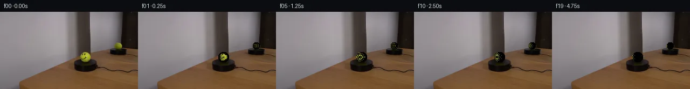

![首帧]()

Round 00
2026-11-06T01:02:29.652223+00:00像素候选变化代码 +359/−0inspection 更新
pixels 145ff84500601d91 · code 4dc6ccfc6c826dc6
查看本轮 generate.py 真实 diff
--- previous/generate.py +++ current/generate.py @@ -0,0 +1,359 @@ +#!/usr/bin/env python3 +"""Generate 20-frame tennis-ball rotation animation (PixelWorld-Text). +Method: spherical UV texture mapping with synthetic smiley-face texture. +Frame 00 == first_frame.png exactly. Frames 01‑19 render the ball rotating +clockwise on the platform, with the smiley face rotating into view. +""" + +import numpy as np +from PIL import Image +from pathlib import Path + +CASE_DIR = Path(__file__).parent +TMP = CASE_DIR / ".tmp" +TMP.mkdir(exist_ok=True) + +# --------------------------------------------------------------------------- +# 1. Load first frame +# --------------------------------------------------------------------------- +img = Image.open(CASE_DIR / "first_frame.png") +base = np.array(img).astype(np.float64) # (144, 256, 3) +H, W = 144, 256 +FRAMES_N = 20 +TOTAL_ROTATION_DEG = 120.0 # clockwise rotation over 5 seconds +TOTAL_ROTATION_RAD = np.radians(TOTAL_ROTATION_DEG) + + +# --------------------------------------------------------------------------- +# 2. Ball region parameters (measured from first_frame.png) +# --------------------------------------------------------------------------- +# Region A – mirror reflection of the ball (upper blob, dimmer) +BALL_A_CX, BALL_A_CY, BALL_A_R = 219.0, 63.0, 7.0 +# Region B – ball directly visible on platform (lower blob, brighter) +BALL_B_CX, BALL_B_CY, BALL_B_R = 158.5, 84.0, 10.0 + +# ── Build precise per-ball masks (circle interiors) ── +ys_grid, xs_grid = np.mgrid[0:H, 0:W] + +def circle_mask(cx, cy, r): + """Return boolean mask for pixels inside the circle (cx,cy,r).""" + return ((xs_grid - cx) ** 2 + (ys_grid - cy) ** 2) <= r**2 + +mask_a_int = circle_mask(BALL_A_CX, BALL_A_CY, BALL_A_R) +mask_b_int = circle_mask(BALL_B_CX, BALL_B_CY, BALL_B_R) + +# Union of all ball pixels (for texture sampling) +ball_union = mask_a_int | mask_b_int + + +# --------------------------------------------------------------------------- +# 3. Spherical texture map (equirectangular, 200×100) +# --------------------------------------------------------------------------- +TEX_W, TEX_H = 200, 100 +tex = np.zeros((TEX_H, TEX_W, 3), dtype=np.float64) + +# ---- 3a. Sample ball surface from frame 0 for the back-facing hemisphere ---- +# The "back" of the ball (visible in the mirror, frame 0) maps to the +# centre-longitude of the texture. We'll use pixels from *both* ball +# regions to seed the texture, then extrapolate. + +# Collect all ball-interior pixels from frame 0 +ball_px_ys, ball_px_xs = np.where(ball_union) +# For each, compute its spherical UV on the *upper* ball (Region A) and +# assign to the texture. + +# Use Region-B (camera-visible) as the primary source; Region-A (mirror) is +# essentially the same surface viewed from a different angle. + +def pixel_to_uv_ballb(x, y): + """Map a pixel in Region B to equirectangular UV (0–1,0–1).""" + dx = (x - BALL_B_CX) / BALL_B_R + dy = (BALL_B_CY - y) / BALL_B_R # image y ↓, 3D y ↑ + d2 = dx * dx + dy * dy + if d2 >= 1.0: + return None + dz = np.sqrt(1.0 - d2) + theta = np.arctan2(dx, dz) # -pi … pi + phi = np.arctan2(dy, np.sqrt(dx * dx + dz * dz)) # -pi/2 … pi/2 + u = (theta + np.pi) / (2.0 * np.pi) + v = (phi + np.pi / 2.0) / np.pi + return u, v + + +def pixel_to_uv_balla(x, y): + """Map a pixel in Region A to equirectangular UV.""" + dx = (x - BALL_A_CX) / BALL_A_R + dy = (BALL_A_CY - y) / BALL_A_R + d2 = dx * dx + dy * dy … diff truncated; 272 more lines …